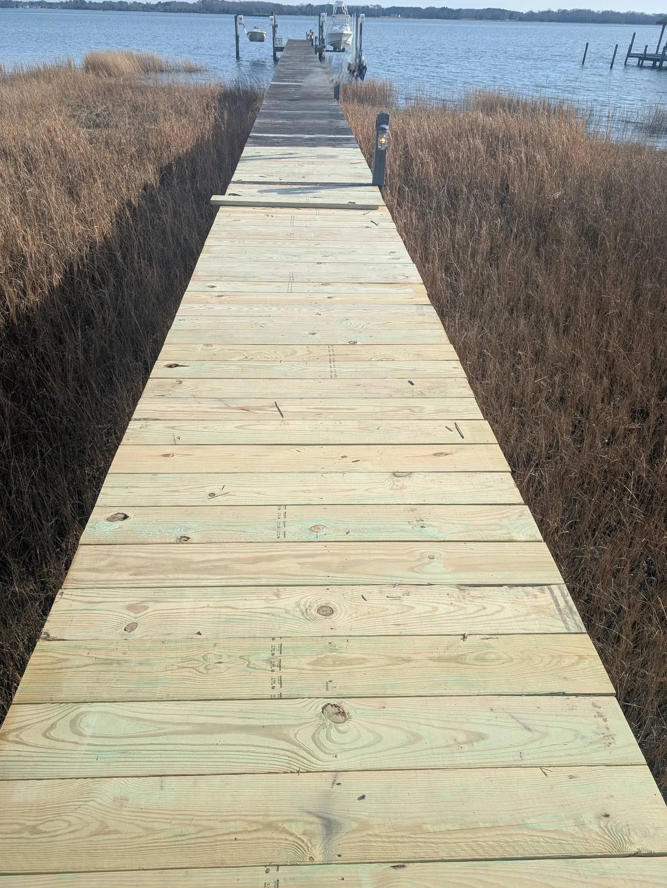

Residential piers and docks • Virginia Beach and Norfolk
Pier and dock contractor for homeowners in Virginia Beach and Norfolk
Most piers we see don't need to be torn out. The boards are tired, a landing has gone soft, and the fasteners have worked up, but the pilings underneath are still doing their job. That's work we can do.
Who repairs residential piers and docks in Virginia Beach and Norfolk?
Stewart Bradley Pier Services repairs, re-decks, and rebuilds existing residential piers and docks for homeowners in Virginia Beach and Norfolk. We're a Virginia Class A contractor based in Suffolk, and we work on the pier you already have. That includes selective repairs, new decking on existing pilings, rope rails, marine-grade staining, pressure washing, lighting, and honest pier assessments.
What we do for Virginia Beach and Norfolk homeowners
- Pier re-decking and rebuild: We take up worn decking and lay new pressure-treated decking, spaced for the waterfront. When the deck and framing are gone but the piles remain, we rebuild the pier or dock on those existing pilings. Read more about re-decking
- Selective repairs: We replace failed boards, framing, or hardware in the affected area and leave the parts that are still sound. Read more about selective repairs
- Traditional and rope rail installation: We add or replace railings with durable posts and rope detailing for a clean, classic finish. Read more about rope rails
- Marine-grade staining: We seal and protect wood against sun, moisture, and salt with stains suited to Hampton Roads conditions. Read more about staining
- Pressure washing: We clean off algae, dirt, and weathering for seasonal upkeep. Read more about pressure washing
- Pier assessments: We take an honest visual look at the accessible, above-water areas, then give you a clear scope before you decide anything. Read more about assessments
- Pier and dock lighting: We add weather-resistant lighting for safer access after dark. We coordinate it with the rest of the pier work, and a licensed electrician handles the electrical wiring and connections where required.
Where we work
We serve waterfront homes across Virginia Beach and Norfolk. In Virginia Beach that includes homes on the Lynnhaven River, Broad Bay, and Linkhorn Bay. In Norfolk it includes homes along the Lafayette River and the Elizabeth River. We also serve Suffolk, Smithfield, Chesapeake, Portsmouth, Hampton, Newport News, and Poquoson.

How it works
- Initial conversation. Call (757) 982-8082 or send a few details. Tell us what you're seeing, like loose boards, soft spots, a railing that moves, or a walkway that holds water. We usually follow up the same business day.
- On-site assessment. We walk your pier and look at the accessible, above-water areas. Then we talk through practical options for restoring strength, safety, and the coastal character you enjoy.
- Detailed estimate. You get a clear scope and price before anything begins. We recommend the work your pier needs, not a larger scope simply because it can be sold.
- Built with care. We plan access carefully, keep the work area orderly, and treat your waterfront home the way we'd treat our own.
- Clear communication. You get a straight answer when you call, and a heads-up before anything changes.
Who this is for
- Homeowners in Virginia Beach or Norfolk with an existing residential pier or dock that's worn, uneven, or no longer feels safe
- Owners who want an honest opinion on whether to repair, re-deck, or rebuild on the existing pilings
- Anyone who wants a pier that looks cared for again, with new decking, a rope rail, a fresh finish, or lighting
Who this isn't for
- A brand-new pier built from scratch. We work on structures that are already there, on the pilings already in the water.
- Commercial, marina, or public piers. We work on residential waterfront only.
- Land-side renovations and general contracting. Stewart Bradley Companies handles those.
If your project falls outside what we do, we'll say so plainly.
Frequently asked questions
Do you work in Virginia Beach and Norfolk, or just Suffolk?
Both. We're based in Suffolk and restore residential piers and docks across Hampton Roads, including Virginia Beach and Norfolk, as well as Chesapeake, Portsmouth, Smithfield, Hampton, Newport News, and Poquoson.
Can my pier be repaired or re-decked instead of replaced?
Often, yes. The right answer depends on the condition of the decking, framing, pilings, and connections, not on age alone. Many piers need only selective repairs or a re-deck. When the deck and framing are gone but the piles remain, we rebuild on those existing pilings.
How much does it cost to re-deck or repair a pier in Virginia Beach or Norfolk?
It depends on the pier's length and width, its condition, and the scope.
After we've walked your pier, you'll get a clear scope and price before any work begins.
What happens at the consultation and assessment?
The consultation is free. We talk through what you're seeing and figure out the best next step. If a site visit makes sense, we do an honest visual look at the accessible, above-water areas of your pier and follow up with a clear, written scope.
Can you add lighting to my pier or dock?
Yes. We add practical, weather-resistant lighting to existing residential piers and docks and coordinate it with the rest of the pier work. A licensed electrician performs the electrical wiring and connections where required.
Let's talk about your pier.
Pick a convenient time for a free consultation. We'll discuss what you're seeing, answer your first questions, and work out the best next step.
Call (757) 982-8082 or email contact@stewartbradleypierservices.com. You can also send a few details using the form below, and we'll usually follow up the same business day.
Virginia Class A Contractor License #2705160892 · Suffolk, Virginia · Serving Virginia Beach, Norfolk and Hampton Roads
Land-side renovations and general contracting: Stewart Bradley Companies

Ready to restore your pier?
Let’s talk about your pier.
Choose a convenient time for a free consultation. We can discuss what you are seeing, answer initial questions and determine the best next step.
Schedule a Free Pier Consultation- Free consultation
- Honest recommendations
- Virginia Class A contractor
- Serving Hampton Roads
Not Ready To Schedule?
Request a Free Estimate
Send a few details below and we will follow up, typically the same business day.